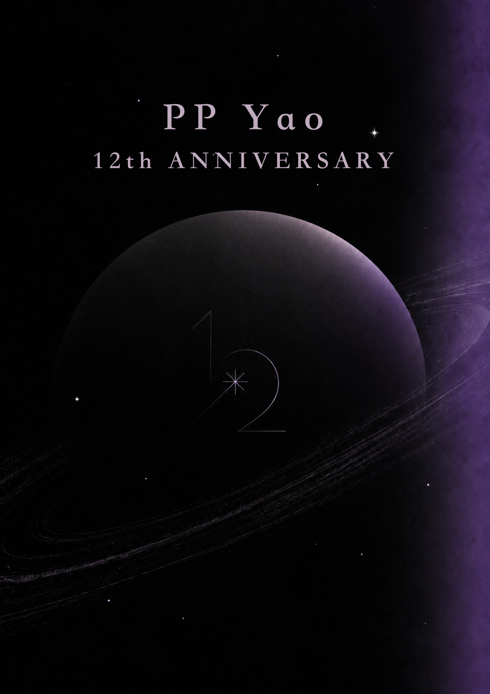

PP Yao
12th ANNIVERSARY
SCROLL

✦ 點擊書封閱讀
出道十二週年紀念
文 字ㄅ級分的煙機
十二部作品，兩個篇章——「在不同之間，看見彼此」與「在青春散場以前，留下些什麼」。一名觀眾逆著時間往回走，把十二年的光，重新讀成一本書。
✦ 字級調整✦ 頁面深淺✦ 直排／橫排
CONSTELLATION OF WORKS
作 品 星 系
十二年的軌跡，凝成一座星系。
每一部作品，都是一顆自轉的星球——沿著旋臂輕觸，或緩緩下滑，逐一造訪。
電影
戲劇影集
短劇
MUSIC VIDEO NEBULA
MV 星 雲
散落在星系外緣的光點——每一支 MV，都是一次短暫而明亮的閃爍。
輕觸星光，前往觀看。
INTERVIEW ORBIT
訪 談 星 軌
十二年間散落各處的訪談與紀錄，沿時間軌道排列。
與作品直接相關的訪談，已同步收錄於各自的星球頁。